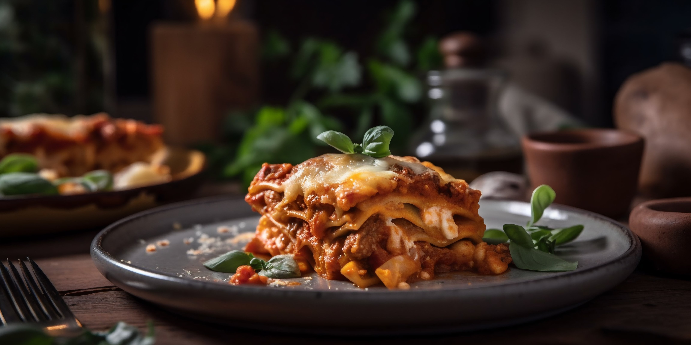

This hearty lasagna recipe is very intensive and not for the faint of heart. Those who are brave enough to attempt it will be rewarded with a restaurant-quality dish combining a rich and beefy sauce with a creamy bechamel, that enchances the cheeseness of the dish.
This recipe should yeild about a quart of sauce which is overkill for a standard 9x13 lasagna, but the leftovers can make a mean bolognese sauce for any other pasta dish, with the addition of a little wine vinegar while reheating Note that this recipe is based on standard trader joes ingredients, and attempts to use entire cans so that none is left over after cooking.